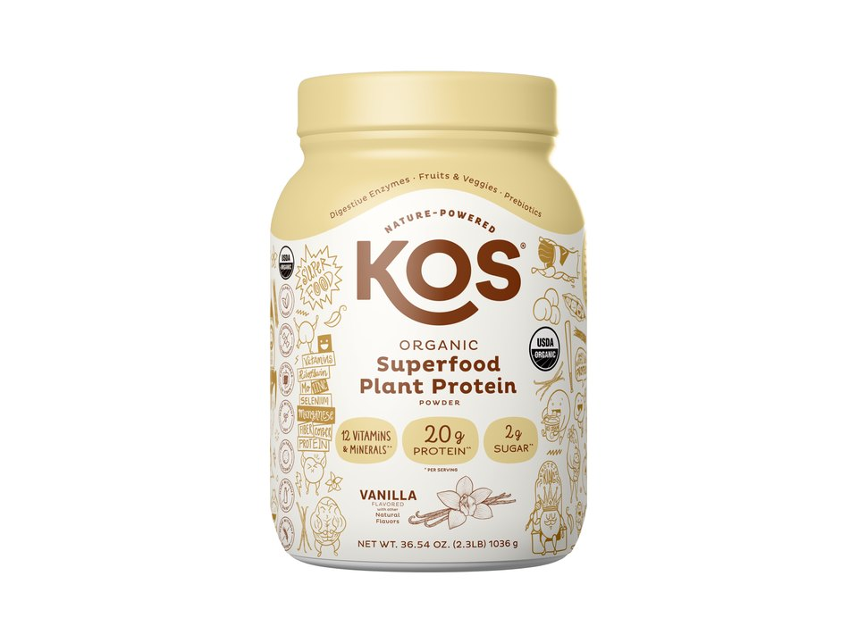

Product imagery supplied by the retailer. Packaging may vary — verify the Supplement Facts panel on the container you receive.
KOS
Organic Plant Protein
Our analysis — editorial take, not from the label
20 g of protein from a five-source plant blend plus an added superfoods and digestive-enzyme layer — more ingredients than a bare-bones isolate, with the sub-blend amounts left undisclosed.
- Protein
- 20 g
- Protein by weight
- 54%
- Source
- plant blend (pea, flax, quinoa, pumpkin seed, chia)
- Servings
- 28
Price tier: Mid-range · relative cost per full serving across this database
We don't list dollar prices — they change daily and go stale. Check the live price instead:
View current price at Amazon Compare all protein powdersScoop Sense doesn't collect user reviews and won't invent them. Read customer reviews on Amazon
Affiliate links — Scoop Sense may earn a commission at no additional cost to you.
Figures verified against Vanilla (37 g two-scoop serving, 28-serving tub); sweetened with coconut sugar, organic stevia leaf extract, and organic monk fruit extract.
Label verified: July 2026 · View label source
Label data
Per full serving · 28 servings per container · from the manufacturer's panel
| Protein per serving | 20 g |
|---|---|
| Serving size | 37 g |
| Protein per scoop | 54% |
| Calories | Not recorded |
| Total carbohydrate | Not recorded |
| Total fat | Not recorded |
| Source | plant blend (pea, flax, quinoa, pumpkin seed, chia) |
| Sweetener | coconut sugar + stevia + monk fruit |
| KOS Organic Protein Blend (pea, flax seed, quinoa, pumpkin seed, chia seed) | 20 g |
| KOS Organic Superfoods Blend (coconut milk, inulin, acacia gum, fruit and vegetable powders) | amount not stated on label |
| Digestive Enzyme Blend (amylase, lactase, protease, lipase, cellulase) | amount not stated on label |
| Proprietary blend | Total only — source ratio undisclosed |
Primary label source: KOS product page (Vanilla, 28 servings) · verified July 2026
Cautions
- Uses named 'blends' rather than individually dosed ingredients — total protein is disclosed, sub-amounts are not
- Carries a California Prop 65 warning for lead exposure, common among plant proteins that concentrate trace minerals from soil
- Protein powders supplement food, not replace it
Formulated for healthy adults — not intended for anyone under 18. Full health & safety notes
Product details
Where this label sits
KOS Organic Plant Protein is one of the protein powders in the Scoop Sense database. The label uses at least one proprietary blend, so a blend total stands in place of the individual amounts inside it. It runs 28 servings per container at the full labeled serving. Everything on this page comes from the manufacturer's supplement facts panel as of July 2026 — never from the marketing page.
Key ingredients & studied doses
- KOS Organic Protein Blend (pea, flax seed, quinoa, pumpkin seed, chia seed) · 20 g. A five-source plant protein blend combined to round out the essential amino-acid profile; pea protein is the most studied of the five for supporting muscle protein synthesis.
- KOS Organic Superfoods Blend (coconut milk, inulin, acacia gum, fruit and vegetable powders) · amount not stated on label. A fiber- and fruit/vegetable-powder blend layered onto the protein base; inulin is a prebiotic fiber.
- Digestive Enzyme Blend (amylase, lactase, protease, lipase, cellulase) · amount not stated on label. Added enzymes intended to support normal digestion of the protein and fiber sources.
Flavors & sweetener
Figures verified against Vanilla (37 g two-scoop serving, 28-serving tub); sweetened with coconut sugar, organic stevia leaf extract, and organic monk fruit extract.
Who it's best for
A standard-ratio powder — fine as a food supplement when total daily protein is what matters. Suits anyone avoiding dairy. Skip it if you want every individual dose disclosed on the label. Derived from the label figures above — not medical advice.
How we log this label
Every entry is built the same way: we read the current supplement facts panel, log each disclosed dose, compare it against the amounts used in published research, flag proprietary blends, and state the cautions plainly. The full methodology explains each step.
This label against the research
How we evaluate labelsEach bar shows the amount commonly used in published human research, and where this label's dose falls against it. Research amounts are context, not a recommendation — they are not doses, and nothing here is medical advice.
-
Protein20 g
At or above the studied amount0studied range 20 g–40 g50 g
Per-meal doses studied for muscle protein synthesis run about 20–40 g of high-quality protein, with the upper half of that range favoured for larger athletes and older adults.
Source: Jäger et al., Journal of the International Society of Sports Nutrition 2017 — “General recommendations are 0.25 g of a high-quality protein per kg of body weight, or an absolute dose of 20–40 g.”
One or more amounts on this label sit inside a proprietary blend, so the individual doses behind the blend total cannot be compared at all.
Common questions about KOS Organic Plant Protein
How much of a KOS Organic Plant Protein scoop is actually protein?
20 g of protein from a 37 g serving — about 54%. The rest is flavoring, fats, carbs, and whatever else the label lists. A higher percentage means less filler per scoop.
What does the proprietary blend in KOS Organic Plant Protein hide?
The KOS Organic Protein Blend (pea, flax seed, quinoa, pumpkin seed, chia seed) lists 20 g as a combined total. A blend total tells you the sum of its ingredients, not the individual doses inside it — which is why blend entries can't be checked against studied amounts.